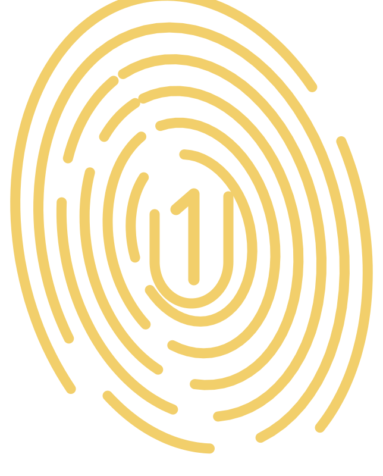

QCF CIVILIZATION ID
身份绑定中心
一个文明ID · 多重可信验证
QCF 不保存原始指纹、Face ID/面部模板、DNA序列或Apple/Google私钥。
文明共建者主邮箱。正式启用后需双重确认。
READY · BACKEND PENDINGPhone
手机号验证码绑定。
PROVIDER REQUIREDPasskey · Face ID / Fingerprint
使用设备本地生物识别或FIDO2安全钥匙。
WEBAUTHN BACKEND REQUIREDApple
Sign in with Apple 绑定。
OAUTH APP REQUIREDGoogle OIDC 绑定。
OAUTH APP REQUIREDDNA Credential
完全自愿；只保存凭证证明，不保存原始DNA。
SEPARATE CONSENT REQUIRED其他密钥 / 安全钥匙
支持FIDO2硬件安全钥匙与未来可验证凭证。
PLANNED